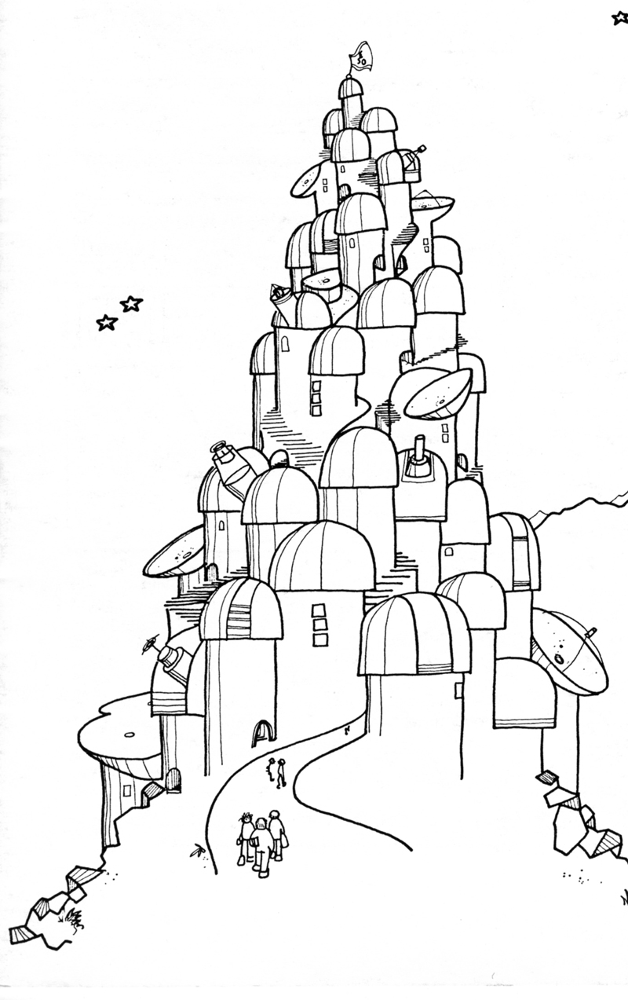

La Silla Anno 19xx?


The ESO Conference on Optical Telescopes of the Future showed a clear division between the astronomers who want very large telescope (16 to 25 m class) and those who opt for an array of interlinked "small" telescopes (~100 elements, each 2-3 m mirror diameter). Confronted with the continuously increasing demand for precious telescope time on La Silla, we here present the "optimal-solution plan" for La Silla that recently leaked from the ultra-secret ESO Planning Group (not even the Finance Committee knows about it!). Drawn by Karen Humby of the Engineering Group in Geneva, this beautifully simple conception purportedly aims at the definitive pacification of the various advocates of future telescopes by a masterful combination of size and quantity. It is reported, however, that fears have been expressed about the long-term stability of the support... no, you are wrong, of the La Silla bedrock, of course.
© The ESO Messenger (Editor: Richard West)